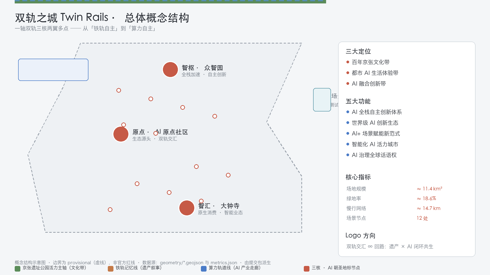
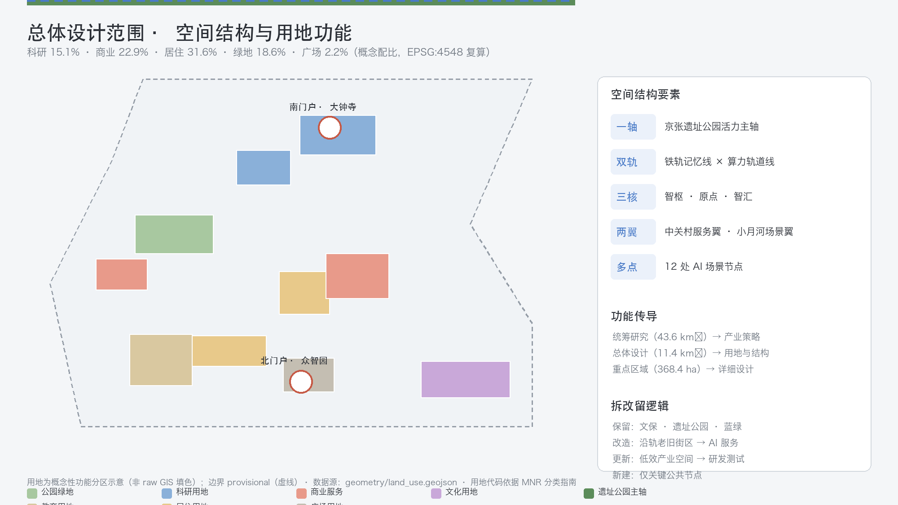
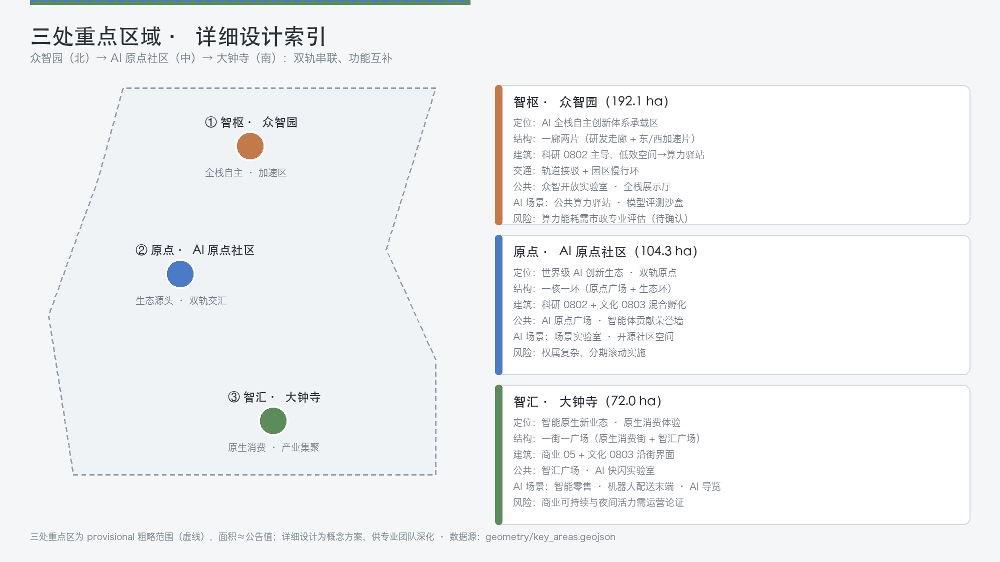
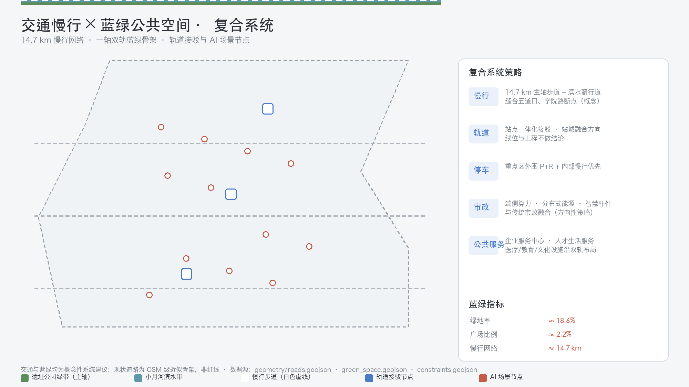
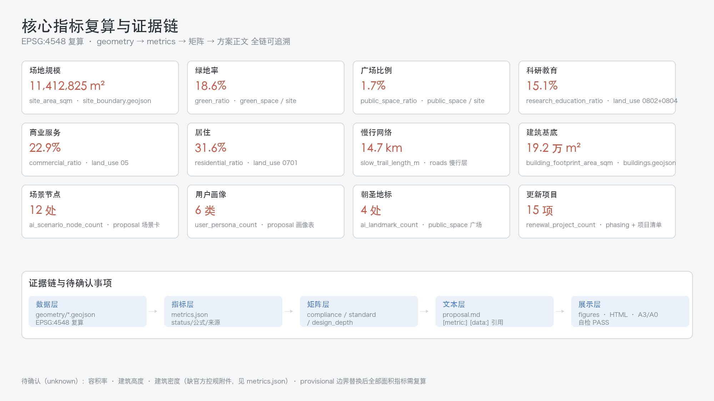

Twin Rails: Centennial Jing-Zhang AI Innovation Belt: Overall Concept and Urban Design
With the core metaphor of \"dual tracks running parallel—one for material tracks (heritage memory) and one for computational tracks (AI future)—along the Jing-Zhang Heritage Park,\" the overall concept of an AI innovation belt is proposed: a one-axis, two-track, three-core, two-wing, and multiple-point layout. This includes the Zhongzhiyuan full-stack acceleration, the AI Origin community ecological source, and the Dazhongsi original consumption. It is complemented by developer promenades, intelligent entity contribution honor walls, and other pilgrimage landmarks, as well as a global AI activity operational system. All spatial suggestions are conceptual frameworks for professional teams to further develop.
Twin Rails: Centennial Jing-Zhang AI Innovation Belt: Overall Concept and Urban Design
Design Basis and Source List
This proposal is a formal conceptual design scheme for the "Centennial Jing-Zhang AI Innovation Belt Urban Design Open Call." It is generated by an AI Agent based on publicly available repository materials and provisional boundaries. All spatial design, activity operations, brand promotion, and policy mechanisms are expressed as "Conceptual Recommendations," "reference schemes," or "available for professional teams to deepen research," and do not replace formal planning or constitute government approval conclusions 来源. (Centennial Jing-Zhang AI Innovation Belt Open Call for Urban Design)
Core Creative Concept: A century ago, Zhan Tianyou autonomously designed and constructed the Jing-Zhang Railway, achieving a leap from 'dependency' to 'autonomy' for China's railways; a century later, Haidian is building an AI innovation belt along this railway, completing another leap from 'computing autonomy' to 'intelligent autonomy'. The proposal uses 'dual tracks' as the core metaphor for naming, spatial organization, narrative, and operational strategy: the Railway Memory Line (Jing-Zhang Heritage Park, carrying a century of cultural heritage) and the Computing Track Line (an AI industry and innovation service corridor along University Road, pointing towards an intelligent future) run parallel and interlock, converging at the AI Origin Community — here, the dual tracks meet at their 'origin', and also serve as the 'origin' of innovation 来源.
List of References and Evidence: The formal task basis for the proposal is the official pre-qualification announcement (tasks 1.3/1.4/1.5, three levels of scope, three key areas) 标准 and the agent task book (ten co-creation principles, three positioning statements, five functions, Three Zones and Two Wings, agent.1-agent.6, unified boundary clauses) 标准. Professional standards are adopted from the Urban Design Management Measures 标准 来源, the Compilation and Approval Measures for Control Detailed Planning of Cities and Towns 标准 来源, and the Guide for Land and Sea Use Classification in Territorial Space Investigation, Planning, and Control 标准 来源. (Regulatory Detailed Planning) Spatial data is registered in sources.json: OFFICIAL-ANNOUNCEMENT, AGENT-TASKBOOK, SITE-PACKAGE, and SOURCE-REGISTRY are formal-ready sources; BOUNDARY-SOURCE and KEY-AREA-SOURCE are provisional-only boundary sources; OSM-BASE, HERITAGE-PUBLIC, and PUBLIC-NARRATIVE are background materials 来源 来源.
Provisional Boundaries Disclosure: This scheme uses provisional rough boundaries provided by the organizing party (Overall Design Area PROV-SITE-001, approximately 11.4 km²; three key areas PROV-KEY-001/002/003). These boundaries are inferred based on the limits and area constraints specified in the announcement, and are only for AI generation, visualization, and temporary self-check purposes. They must not be used as official redlines, approval references, or for precise area recalculation. Once the formal polygon is released, all area indicators and layer coverage must be recalculated 来源 来源 深度.
Matrix Correspondence: Task responses are detailed in compliance_matrix.json (covering all mandatory tasks in announcements 1.3-1.5 for agent.1-agent.6); professional standard responses are found in standard_matrix.json; evidence of design depth is provided in design_depth_matrix.json; assumptions and boundaries are outlined in assumptions.json; and self-inspection results are available in self_check.json 来源.

Three-Level Scope Framework
The three levels of scope are to be implemented progressively according to the "Industrial Strategy—Overall Design—Key Areas" 标准:
- Coordinated Research Area (approximately 43.6 km²): North to the Fifth Ring Road North, East to the Jingzhang Expressway, South to West Straight Street, and West to Wanquanhe Road. This layer addresses the industrial and future city questions: how a world-class AI Innovation Ecosystem can be organized, how the Three Zones and Two Wings can be coordinated, and how an AI-Native urban form can be expressed. The output includes an industrial strategy, naming system, spatial structure diagram, and indicator framework 深度 空间数据.
- Overall Design Area (provisional): The design scope covers approximately 11.4 km², focusing on the urban and industrial areas within 1-2 kilometers of the Jing-Zhang Heritage Park. The design aims to achieve a detailed Urban Design at the control plan depth. This layer will implement the "one axis, two tracks, three cores, two wings, and multiple points" spatial structure, Land-Use Layout, update framework, blue-green system, and facade control 深度 空间数据.
- Key-Area Detailed Design Area (approximately 368.4 ha, provisional): From north to south, it includes the Zhongzhiyuan AI Independent Innovation Acceleration Area (approximately 192.1 ha), the Beijing AI Origin Community (approximately 104.3 ha), and the Dazhongsi AI Industry Cluster Area (approximately 72.0 ha), reaching the depth of the comprehensive implementation plan Urban Design, providing detailed positioning, spatial structure, building updates, traffic and pedestrian systems, Public Spaces, AI scenarios, and implementation risks 深度 空间数据.
Three-tier logical transmission: the coordinated layer defines the 'dual-track' industrial framework (the rail memory line is responsible for culture-scene-popularity, while the computational track line is responsible for R&D-services-capital); the overall layer translates the framework into land use and spatial structure; the key layer creates perceivable urban fragments in the three core areas. After the provisional boundaries are replaced with official polygons, the coverage and total area indicators for land_use, green_space, public_space, and phasing need to be recalculated 指标 指标 [assumption:A-BOUNDARY-001].

Coordinated Research Area: Industry and Future City Research
Overall Concept and Naming System (agent.1)
- Main Name (Chinese): Double-Track City.
- Main Name (English): Twin Rails.
- Naming System: Derive hierarchical names with "Track" as the core root—three cores: Intelligence Hub · Zhongzhiyuan (Compute Hub, full-stack acceleration), Origin · Beijing AI Origin Community (Origin, ecological source), Intelligence Confluence · Dazhongsi (Nexus, native consumption); two wings: Zhongguancun Technology Services Wing (Service Wing), Xiaoyue River Scenario Enablement Wing (Scenario Wing); main axis: Jing-Zhang Heritage Park Vitality Spine (Spine). "Track" refers to both the Jing-Zhang railway tracks, as well as the computational track, talent track, and capital track, forming an extendable lexical family 来源.
- Logo Direction: Two parallel steel tracks converge from afar into an "∞" loop, symbolizing the coexistence of heritage memory and AI future in a closed loop; alongside, the sleeper markings serve as a metaphor for "milestones" and "memorial systems." The logo is a conceptual direction and does not involve any existing trademarks or font infringement 深度.
- Three Key Positions: century-old Jing-Zhang cultural belt, urban AI living experience belt, AI integrated innovation belt; Five Major Functions: Full-Stack Independent AI Innovation System, world-class AI Innovation Ecosystem, AI-Enabled Scenario Empowerment Paradigm, intelligent AI vibrant city, AI governance global discourse power. Three Zones and Two Wings collaborative loop: Zhongzhiyuan produces full-stack technology → Dazhongsi incubates the ecosystem → Dazhongsi transforms the original business forms; Zhongguancun service wing provides capital/element allocation, Xiaoyuhe scenario wing provides testing/experience space, forming a "research and development—incubation—transformation—empowerment—feedback" loop 来源 深度.
Global AI Innovation Ecosystem Case Examples (agent.2, 6 examples)
The following cases are provided for general narrative purposes only and do not involve lists of companies, investment amounts, or production value commitments 来源:
| # | Case | Translatable Experiences |
|---|---|---|
| 1 | King's Cross, London (Railway Heritage Revitalization) | Revitalizing the area with railway heritage as the cultural axis, adopting a model where heritage and innovation coexist, directly aligning with the Jing-Zhang main axis. |
| 2 | Paris Station F (Cargo Station Renovation into Startup Campus) | Transforming a Single Historical Transportation Building into a Startup Community for Thousands, Validating the "High Capacity, Low Threshold, Strong Community" Space Model |
| 3 | Singapore One-North | Urban Community Integrating Work, Innovation, and Living: Research, Incubation, Living, and Green Spaces Integrated, Corresponding to AI Origin Community |
| 4 | Berlin TXL (Airport Transformation Innovation District) | Convert transportation infrastructure after its operational life into a research-testing-display composite district, corresponding to the Acceleration Zone of Zhongzhiyuan |
| 5 | Shenzhen Bay Technology Ecological Park | Hardware-Software-Capital Vertical Ecology and Public Service Platform, Corresponding to Zhongguancun Service Wing |
| 6 | Zhongguancun Software Park/Shangdi (Local Reference) | Agglomeration of local enterprises, Scenario Access, and park service mechanisms, serving as a control for the extension of the innovation belt to the north |
Transformation Mechanisms: 1. Heritage Activation (Case 1, 2) → Main Axis Public Space and Cultural Scenarios; 2. Vertical Ecology (Case 3, 5) → Tri-Nucleus Functional Organization; 3. Infrastructure Regeneration (Case 4) → Zhongzhiyuan Update Strategy; 4. Local Service Network (Case 6) → Service Wing Enterprise Service Mechanism 指标.
Future Urban Form
AI-Native Urban Forms in Five Directions: Perceptible (scenics visible, experiential), Testable (low-speed, regulated, and reviewable test environment), Governable (Urban Agent governance sandbox, Human Review prioritized) 指标, Memorable (landmarks and honor systems to carry contributions), Operable (annual events and developer communities forming long-term brand assets) 来源. Spatially implemented as "one axis, two tracks, three cores, two wings, and multiple points": the vitality axis of the heritage park (cultural belt), the memory line of the rail tracks + computational track line (two tracks), three cores and two wings (functional), 12 AI scenario nodes (multiple points) 深度 空间数据.
Overall Design Area: Urban Renewal and Regulatory-Plan-Level Urban Design
Overall spatial structure
Axis: The Jing-Zhang Heritage Park's vibrant main axis runs from north to south through Zhongzhiyuan—AI Origin community—Dazhongsi. It serves both as a cultural narrative line and as the primary pedestrian spine 空间数据.
Dual Track:
- Iron Track Memory Line: A heritage narrative belt along the main axis, connecting the old Tsinghua Garden Railway Station site, an exhibition of old railway components, developer walkways, and an open-source results gallery, reinforcing the century-long narrative of "Zhan Tianyou's autonomy → AI autonomy" 空间数据 来源.
- Computing Track Line: Along the Academy Road—Xitucheng Road direction, the AI industry and innovation service corridor is planned with public computing hubs, enterprise service centers, and Testing and Validation Scenario 空间数据.
Three Core Areas: Smart Hub (Zhongzhiyuan), Origin (AI Origin Community), Smart Convergence (Dazhongsi); Two Wings: Zhongguancun Technology Services Wing (west, element allocation), Xiaoyue River Scenario Enablement Wing (east, scenario experience); Multiple Points: 12 AI scenario nodes distributed along the dual tracks and wings 指标 指标.
Functional Layout and Update Framework
The functional layout is based on the concept proportions of "research and education 15.1%, commercial services 22.9%, residential 31.6%, green spaces 18.6%, and plazas 2.2%" 指标 指标 指标 指标, expressed through a full coverage in land_use.geojson (gap-free and overlap-free) 深度 空间数据.
Urban Renewal is organized into four categories: "preserve—renovate—update—rebuild" 深度 标准:
- Preserve: the former location of the Tsinghua Garden Railway Station and other cultural heritage sites, archaeological parks, and green spaces and water systems (
constraints.geojson)空间数据; - Redesign: Transform the old street areas and inefficient buildings along the track into a mix of AI services, incubation, and residence (see
buildings.geojson空间数据). - Update: Transform inefficient industrial spaces into R&D-testing-display composite spaces;
- New Construction: Add only public facilities and key nodes within the update units, avoiding large-scale demolition and reconstruction.
Demolish–Renovate–Retain Strategy, Floor Area Ratio, Building Height, road alignment, and municipal utility lines do not have official control and detailed planning regulations. The text should all be expressed as directional Conceptual Recommendations, with the legal conclusions listed as pending confirmation 标准 指标 [assumption:A-CONTROLS-001].
Controlled Aesthetic Direction
The architectural style is based on the theme of 'dual tracks': buildings on both sides of the main axis drop towards the site park, forming a 'city-to-green' skyline; along the computing power track, bulk volumes are aggregated with a tech park interface; the core areas (three nuclei) allow for the formation of nodes with landmark public buildings 深度. Specific height, massing, and color controls are subject to the official control plan [assumption:A-CONTROLS-001].
Detailed Design of Key Areas
Three key areas are based on provisional boundaries, with the following directional detailed design provided for professional teams to deepen 深度 来源.
Zhongzhiyuan AI Independent Innovation Acceleration Area (Intelligence Hub · Compute Hub, approximately 192.1 ha)
- Location: The Full-Stack Independent AI Innovation System and the AI Governance Global Discourse Carrier 来源.
- Spatial Structure: "One Corridor and Two Zones" —— Central R&D Corridor (Full Stack Autonomy: Chips-Framework-Model-Application) and the Eastern and Western Acceleration Zones (testing and pilot production).
- Building Renovation: With the research and development land use (0802) as the main subject, preserve reusable factories and research buildings, and convert inefficient spaces into computing hubs and public testing grounds 空间数据.
- Traffic Slow Zone: Connect to the transit stations (Conceptual Recommendation), with a slow-speed loop within the park.
- Public Space: Collaborative Open Laboratory, Full-Stack Exhibition Hall.
- AI Scenario: Public Computing Power Kiosk, Model Evaluation Sandbox.
- Implementation Risks: Significant investment in computational infrastructure and high energy consumption are required, necessitating a professional municipal and energy assessment (to be confirmed) [assumption:A-CONTROLS-001] 指标.
Beijing AI Origin Community (AI Origin, approximately 104.3 ha)
- Location: World-class AI Innovation Ecosystem and the "Dual Track Intersection Point".
- Spatial Structure: "One Core and One Ring" —— Origin Square (Intersection Memorial Site) + Ecological Ring (Incubation, Display, Living).
- Building Renovation: Research 0802 and Culture 0803 are combined to transform underutilized buildings into incubators and developer apartments 空间数据.
- Public Space: AI Origin Square (one of the sacred landmarks), Intelligent Body Contribution Honor Wall (memorial system core) 空间数据 指标.
- AI Scenarios: Scenario Lab, Open Source Community Space, Honor Display.
- Implementation Risks: Complex ownership, high difficulty in seam integration, requires phased rolling implementation 指标.
Dazhongsi AI Industry Cluster (Zhuihui · Nexus, approximately 72.0 ha)
- Location: Smart AI-Native New Business Forms and AI-Native Consumer Experience Zone.
- Spatial Structure: "One Street, One Square" —— Smart Native Consumption Street + Smart Hub Plaza (intersection at the southern end of the dual tracks)空间数据.
- Building Renovation: Commercial 05 and Cultural 0803 mixed, with the street facade transformed into an AI-Native consumption scenario 空间数据.
- Public Space: Zhuihui Square, AI Flash Lab.
- AI Scenarios: Smart Retail, Robot Delivery End-Points, AI Guiding.
- Implementation Risks: The sustainability of commercial operations, nighttime vitality, and traffic organization require operational justification 指标 指标.

AI Innovation Ecosystem, Personas, and AI+ Scenarios
User Personas (6 Types) 指标
| ID | Profile | Core Needs | Corresponding Scenario |
|---|---|---|---|
| P1 | Global AI Developers/Geeks | Open Collaboration, Computing Power, Honor | SC-07/08/09 |
| P2 | College Students and Young Research Staff | Learning, Testing, Mentor Resources | SC-01/02/09 |
| P3 | AI Entrepreneurs and Small and Medium Enterprises | Policy, Scenarios, Capital, Compliance | SC-04/10/12 |
| P4 | Community Residents (Original Residents + New Citizens) | Livable, Healthy, Commuting, Engagement | SC-01/03/06/11 |
| P5 | Urban Managers/Public Service Personnel | Governance Tools, Human Review, Public Feedback | SC-06/12 |
| P6 | International Visitors/Business Travel | Tours, Transportation, International Communication | SC-02/05/11 |
AI Scenario Card (12 cards, among which 5 are industrial Testing and Validation Scenarios) 指标
| ID | Scenario | Spatial Location | Data/Privacy Boundaries | Human Review | Operating Entity (Recommended) |
|---|---|---|---|---|---|
| SC-01 | Smart Commuting and Barrier-Free Paths | Main Axis Pedestrian Network | Path Recommendations Only, No Collection of Individual Student Data | Reviewed by Education Department | Streets + Schools |
| SC-02 | Ruins Park AI Cultural Tour (Digital Zhang Tianyou Narrative) | Ruins Park Node | No Personal Data | Review Script by Cultural Tourism Department | Park Operator |
| SC-03 | Health Service Navigation | Hospital-Community Interface | Privacy Computing, Desensitization | Medical Institution Review | Health+Hospital |
| SC-04 | Corporate Service Copilot | Service Wing Center | Corporate Voluntary Data Provision | Policy Officer Review | Service Center |
| SC-05 | Low-Speed Robot Delivery Pilot (Testing and Validation) | Dazhongsi District/Xiaoyuehe Wing | Camera Desensitization, Restricted Area | On-Site Safety Officer Verification | Pilot Operator |
| SC-06 | Public Safety Operations Review Station (Testing Validation) | Full-Domain Perception Node | Public Areas Only, Event-Level Desensitization | Public Security + Public Review | City Operation Center |
| SC-07 | Developer Stroll Path + Open Source Achievements Gallery (Testing Validation) | Mid-axis | Open Source Project Metadata | Community Maintainer Review | Developer Community |
| SC-08 | Honor Wall for AI Entities Contributions (Memorial System) | AI Origin Community | Contributors Agree to Display | Review by Organizing Committee | Operations Committee |
| SC-09 | Public Computing Power Kiosks (Testing and Validation) | Computing Power Track Line | Quota System, Log Retention | Compliance Audit | Computing Power Operator |
| SC-10 | AI Origin Scenario Lab | Origin Community | Scenario Whitelist | Ethics Committee | Community Operator |
| SC-11 | Dazhongsi Intelligent Native Consumption District | Dazhongsi Core | Consumer Data Desensitization | Consumer Committee | Business Operator |
| SC-12 | Urban Agent Governance Sandbox (Testing and Validation) | Full-Domain Virtual + Physical Pilot | Simulation Data Priority | Governance Expert Group | City Operation Center |
Scene-Space-Operation Mapping, privacy boundaries, and Human Review mechanisms have been incorporated into the table; all scenes are conceptual proposals and are not expressed as approved operations, and do not rely on non-public data or specified suppliers 深度 来源 [assumption:A-AI-SCENARIOS-001].
AI Industry Testing and Validation Scenario (5 scenarios, ≥3 must meet the criteria)
SC-05 Robot Delivery, SC-06 Safety Verification Counter, SC-07 Open Source Showcase Corridor, SC-09 Public Computing Hub, SC-12 Governance Sandbox: All are subject to limited speed, regulatory oversight, and verifiable conditions, with a clear policy that "immature technologies shall not be expressed as fully deployable" 来源.
Land Use, Building Scale, and Retain-Renovate-Demolish Strategy
Land-Use Layout based on the codes organized in the 标准 来源: research and development land (0802), cultural land (0803), educational land (0804), commercial and service land (05), urban residential land (0701), park and green space (1401), and square land (1403). All land-use units are seamlessly covered within the Overall Design Area 深度 空间数据.
Conceptual Proportions (EPSG:4548 Recalculated): Residential 31.6%, Commercial Services 22.9%, Research and Education 15.1%, Green Spaces 18.6%, Public Squares 2.2% 指标 指标 指标 指标 指标. Building Footprint indicative at approximately 19.2 million m², merely a spatial supply intention, not representing the current status or approved plan 指标 空间数据.
Demolish–Renovate–Retain Strategy (Conceptual Level): Preserve cultural heritage and green belts; transform old industrial areas along the tracks into a mix of AI services and residential use; update inefficient industrial spaces; and construct only at key public nodes. The scale, height, Floor Area Ratio (), and density of the buildings are listed as conditions for confirmation in the control plan. This plan does not provide statutory numerical values 标准 [assumption:A-CONTROLS-001] 深度.
Transport, Rail, Municipal Infrastructure, and Public Services
Current Condition Diagnosis: Based on public narratives and OSM baseline description, the site park's main axis runs north-south, with universities and research institutions clustering along University Road. The Little Moon River forms the eastern blue-green corridor. The primary road framework (University Road, Xitucheng Road, Zhi Chun Road, Chengfu Road, Tsinghua East Road, and the North Fourth Ring Road, etc.) surrounds the site area 深度 来源 来源; accurate current conditions are based on official data.
- Micro-Circulation of Roads: Preserve the existing framework (Academy Road, West Tucheng Road, Zhi Chun Road, Cheng Fu Road, Tsinghua East Road, North Fourth Ring Road, etc.),OSM Based on the concept of near-level approximation, propose the Conceptual Recommendation for encrypted side streets and pedestrian priority.空间数据 来源.
- Walking and Cycling Network: Construct a walking and cycling network of approximately 14.7 km (site park pedestrian trail + Xiao Yuehe riverside cycling path) 指标 空间数据, stitching together slow travel discontinuities such as Wudaokou and Xueyuan Road (Conceptual Recommendation).
- Integrated Rail Transit : The integration of rail transit stations with the three cores and two wings is conceptualized as seamless transfers and station-city development. The alignment and engineering details are not concluded [assumption:A-ROADS-001].
- Parking and Non-Motorized Transportation: Organize around the concept of peripheral parking and transfer + internal prioritization of slow modes 深度.
- New Infrastructure: Directional strategies for the integration of edge-side computing capacity, distributed energy, smart poles, public computing kiosks, and traditional municipal infrastructure, without capacity calculations or engineering feasibility conclusions 深度.

Blue-Green Network, Public Space, and Urban Character
Blue-Green Skeleton: The Heritage Park Vital Axis (North-South Green Spine) + Xiao Yuehe Riverbank (Eastern Blue-Green Corridor) form a "T" shaped blue-green system 空间数据 空间数据, with a green space ratio concept target of approximately 18.6% 指标.
Sacred Landmarks and Honor System (4 sites, ≥3 must meet criteria) 指标:
1. Original Clock (Qinghua Yuan Station Plaza): A landmark at the intersection of two tracks, commemorating the autonomous spirit of Zhan Tianyou's "human-shaped railway" 空间数据; 2. AI Origin Honor Wall (AI Origin Community): Permanently honor the selected Agents and contributors' GitHub usernames, in response to the call for 'Monument' system 空间数据. 3. Open Source Results Showcase Gallery (Mid Axis Segment): Developer Walkway + Open Source Results Showcase Node 空间数据 4. Zhuihui Square (Dazhongsi): Dual-track southern intersection point and intelligent native consumption portal 空间数据.
Conceptual Recommendations are provided for the landmarks and honor system, without involving unauthorized portraits, trademarks, fonts, or copyrighted materials, and avoiding overly entertaining elements 来源 [assumption:A-HERITAGE-001] 深度.
Urban Character: Based on the theme of "urban greening, technology convergence, and cultural history," the buildings on both sides of the main axis drop towards the greenery, while the computational lines cluster to form a modern park interface. The surrounding areas of cultural heritage sites transition to lower levels (conceptual direction) 标准 深度.
Renewal Projects, Implementation Policy, and Phasing
Update Project List (15 items, conceptual level) 指标
| # | Project | Location | Dependent Conditions | Phases |
|---|---|---|---|---|
| 1 | Through-Piercing Axis of the Heritage Park | Main Axis | Coordination of Conservation and Land Use | Near |
| 2 | Original Clock·Tsinghua Garden Station Plaza | North Segment | Confirmation of Cultural Heritage Scope | Near |
| 3 | AI Origin Scenario Lab | Origin Community | Titleholder Coordination | Near |
| 4 | Zhongzhiyuan Full Stack Acceleration Core | Zhongzhiyuan | Computational Power and Energy Assessment | Near |
| 5 | Zhuihui Plaza | Dazhongsi | Business Operation Argumentation | near |
| 6 | Honor Wall for Intelligent Entities | Origin Community | Memorial System Design | Near |
| 7 | Open Source Results Gallery | Mid-axis | Community Operation Mechanism | Near |
| 8 | Slow Travel Discontinuity Integration | Wudao Kou/Xueyuan Road | Traffic Assessment | M |
| 9 | Public Computing Hub | Computing Track Line | Computing Infrastructure | C |
| 10 | Xiao Yue River Waterfront Cycling Path | Xiao Yue River Wing | Blue Line Coordination | CN |
| 11 | Enterprise Service Center | Service Wing | Service Mechanism Design | |
| 12 | Urban Agent Governance Sandbox | Global | Governance Rules First | China |
| 13 | Dazhongsi Intelligent Native Consumption District | Dazhongsi | Commercial and Scenario Operations | China |
| 14 | Global AI Scenario Signage System | Global | Signage Standards | Far |
| 15 | International AI Activity Destination Operations | Global | Branding and Activity Mechanism | Long-term |
Conceptual Recommendation for the phased correspondence in phasing.geojson for near/mid/long term 空间数据 深度. All projects are conceptual recommendations, and the implementation entity, timing, and investment will be confirmed by the government and professional teams [assumption:A-DESIGN-001].
Global AI Innovation Ecosystem and Long-Term Operations (agent.6)
- Annual Activity Framework (Concept): Dual-track Summit (annual main event), Open Source Marathon (quarterly), Developer Week (bi-monthly), Scenario Access Day (monthly), Wisdom Bazaar (weekend), forming a "Summit—Marathon—Access Day" rhythm 来源.
- Activity Brand IP: Unify the visual identity under the brand "Twin Rails" and extend it through the logo system, establishing a long-term brand asset.
- Developer Community Operations: The open-source achievements gallery, honor wall, and contributor recognition system form a "contribution—display—honor—transformation" loop.
- Scenario Access Operations: White-list Scenario Access, Human Review, and Compliance Auditing Triad.
- Public Experience and Urban Landmark Operations: Incorporate the Original Clock Tower, Zhuihui Plaza, and Developer Walkway into the public experience route.
- International Promotion and Attraction Transformation: With "Rail to Origin (From Rail Track Autonomy to Computational Autonomy)" as the international narrative thread, this is complemented by developer visa services, international conferences, and channels for attraction and transformation (Conceptual Recommendation).
Activities, recruitment, funding, policy, and operational arrangements are all Conceptual Recommendations and are not expressed as determined government arrangements. They do not overstate government commitments and activity outcomes 来源 [assumption:A-AI-SCENARIOS-001] 深度.
Metrics, Area Recalculation, and Compliance Matrix
Core Metrics (re-calculated in EPSG:4548, see metrics.json): Site area 11,412,825 m² 指标; Green space area and green space ratio 18.6% 指标 指标 (supporting a high-quality urban district that attracts talent: green spaces within a 500-meter walking distance); Public space area and public space ratio 2.2% 指标 指标 (supporting innovation interactions and public experiences); Research and education proportion 15.1% 指标; Commercial 22.9% 指标; Residential 31.6% 指标. Pedestrian network approximately 14.7 km 指标; three key areas 指标 指标 指标; scene nodes 12 locations 指标; user personas 6 types 指标; sacred landmarks 4 locations 指标; renewal projects 15 items 指标. Floor Area Ratio, Building Height, and Density are listed as unknown due to lack of official data 指标 指标 指标.
Align with the Compliance Matrix compliance_matrix.json covering tasks 1.3.1-1.5.3.3 and agents.1-agent.6, totaling 23 items; the Standard Matrix standard_matrix.json covers 5 mandatory standards; the Depth Matrix design_depth_matrix.json covers 15 deliverable depths, all complete 深度 来源. All indicators are recalculated from geometry/*.geojson, traceable and verifiable; provisional boundaries are uniformly recalculated after replacement [assumption:A-BOUNDARY-001].

Risk, Copyright, and Compliance
- Legal Basis for References: All citations are derived from official public, cleared, or provisional sources.
sources.jsonrecords the source, purpose, and limitations for each reference; no citations are drawn from unpublished planning documents, internal data, or personal privacy 来源. - Provisional Boundary Risk: The overall boundary and three key areas are provisional and should not be used for precise area calculations, redline designation, or approval; the final polygon must be recalculated after its official release [assumption:A-BOUNDARY-001].
- Legal Control Gaps: The Floor Area Ratio, height, density, road red line, municipal utilities, ownership, and engineering conditions are all pending confirmation in the official annexes. The scheme does not make a legal conclusion [assumption:A-CONTROLS-001] 深度.
- AI Generated Responsibility: The proposal is generated by an AI Agent, and the author is responsible for the facts, citations, copyright, and final expression; no logos, fonts, images, or corporate symbols have been used with unauthorized materials 深度.
- Privacy and Ethics: AI scenarios are confined to desensitization, whitelist boundaries, and Human Review, ensuring no scenarios involve excessive monitoring or unreviewable situations [assumption:A-AI-SCENARIOS-001].
- Official Approval and Implementation Commitment Prohibited: This document does not express any matters that have been approved by the government, determined for implementation, or committed to investment. All content is a Conceptual Recommendation.
- Copyright Notice: See
report/copyright_statement.md.
References
brief/site-package/design_brief.json— Project scope, coordinate policy, tasks, and submission policy 来源brief/site-package/agent_taskbook.json— structured excerpt of the agent task book 来源brief/site-package/allowed_design_space.json— Editable/Locked Layers and Boundary Policy 来源brief/site-package/geometry/provisional_boundaries.geojson— provisional boundaries source 来源brief/site-package/standards/standards.jsonandreferences/— professional standard local snapshot 标准data/source_registry.json— Public Data Registry 来源data/processed/agent_fact_pack.md— processed data navigation layer 来源schema/proposal.schema.jsonandbrief/site-package/schemas/*.json— structural constraintstracks.json,scenarios/*.json— Track and Scenario Registration Tables- The Beijing Municipal Commission of Planning and Natural Resources Haidian Branch 来源 Announcement for Qualification Pre-Review of International Proposals for the Urban Design of the Centennial Jing-Zhang AI Innovation Belt (Official Website)
- Beijing Municipal Commission of Culture and Tourism regarding the public records of the Old Tsinghua Garden Station (background reference) 来源
- OpenStreetMap (ODbL, current skeleton background reference) 来源